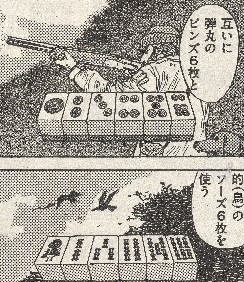
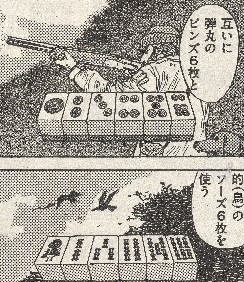

（４１）ラストラン
Ｎｏ．40「幺九麻雀」と同じく「近代麻雀（2006年5/15日号）」に連載中のナグモ（前田二郎）に登場。σ(-_-)のヘタな解説より、マンガをそのまま載せた方が分かりやすいので、そのままコピペ（これくらいなら、○○に引っかからないよね...（^-^；）。それにしても この作者、次から次へといろいろ考案するのに、ほとほと感心。なんだか、手ホンビキと鳥撃ちルールが合体したような感じ。メンツ待ちの時間ツブシに持ってこいかも。ナグモの島にあるゴミ捨て場の看板（^-^；
Tile game 牌ゲーム。
（４１）ラストラン
Ｎｏ．40「幺九麻雀」と同じく「近代麻雀（2006年5/15日号）」に連載中のナグモ（前田二郎）に登場。σ(-_-)のヘタな解説より、マンガをそのまま載せた方が分かりやすいので、そのままコピペ（これくらいなら、○○に引っかからないよね...（^-^；）。それにしても この作者、次から次へといろいろ考案するのに、ほとほと感心。なんだか、手ホンビキと鳥撃ちルールが合体したような感じ。メンツ待ちの時間ツブシに持ってこいかも。ナグモの島にあるゴミ捨て場の看板（^-^；